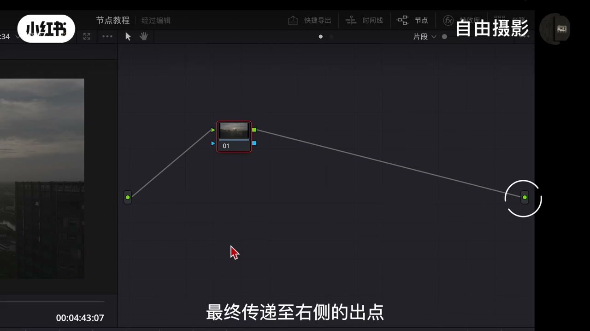
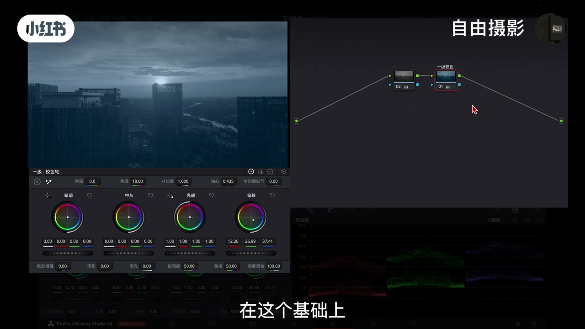
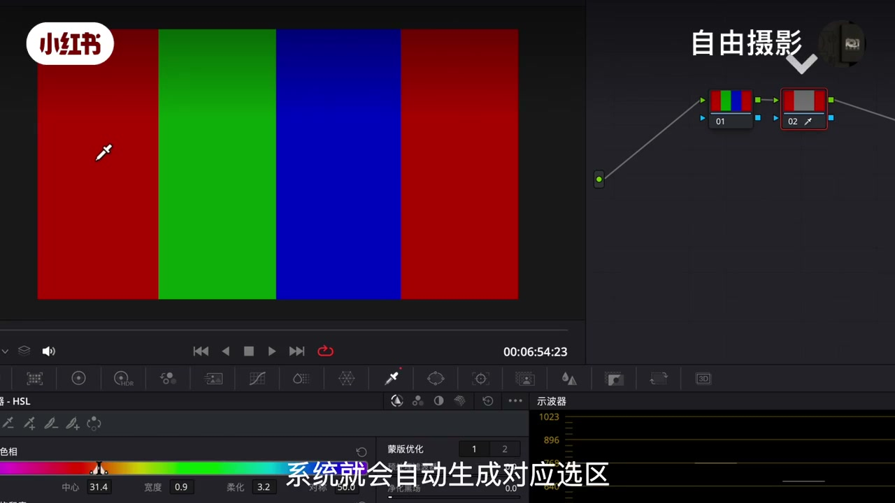
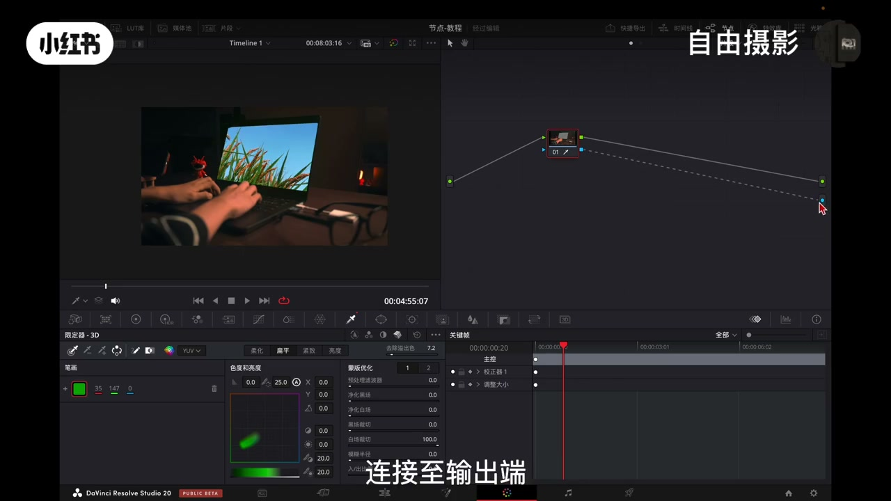
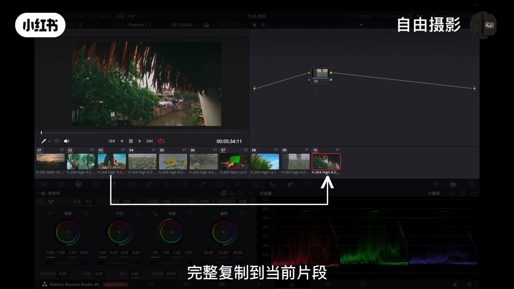

01
中文
节点是达芬奇调色的基石，它采用非破坏性的编辑逻辑，可以让你在任意阶段回溯调整，而绝不会破坏原始素材。
EN
Nodes are the foundation of DaVinci color grading — they work non-destructively, letting you redo any step without ever harming the original footage.
表达提示non-destructively（非破坏性地）

Scene English · 达芬奇 · 节点系统
The DaVinci Node System: One Video to Teach You
🎧 语音讲解
The Basic Node Structure and Independence
情境节点是达芬奇调色基石，非破坏性编辑逻辑。信号左入点→中间校正节点→右出点。节点显示功能图标快速识别。新建节点参数恢复默认，但前节点输出=后节点输入，顺序直接影响效果。
节点是达芬奇调色的基石，它采用非破坏性的编辑逻辑，可以让你在任意阶段回溯调整，而绝不会破坏原始素材。
Nodes are the foundation of DaVinci color grading — they work non-destructively, letting you redo any step without ever harming the original footage.
表达提示non-destructively（非破坏性地）
信号流向从左至右，最左侧的原点为入点，所有画面数据在这里完成调整后，最终传递至右侧的出点。
The signal flows left to right — the dot on the left is the input, and after the image data is adjusted here, it passes to the output on the right.
表达提示the signal flows（信号流向）
前一个节点的输出会成为后一个节点的输入，因此节点排列顺序将直接影响最终效果。
One node's output becomes the next one's input, so the order of nodes directly shapes the final look.
表达提示directly shapes the final look（直接影响最终效果）
「非破坏性」换种说法
「顺序决定结果」换种说法

Serial Nodes: A Linear Pipeline
情境串行节点Option+S创建：第一个节点画面还原、第二个节点白平衡影调、后续风格化。基础调色胜任，但精细局部调色时线性流程局限——前一级颜色调整直接影响后续节点输入。
通常在调色时在第一个节点会进行画面还原，第二个节点修复白平衡和影调调整，后续的节点完成画面风格化处理。
The usual flow: the first node restores the image, the second fixes white balance and tone, and later nodes do the stylized look.
表达提示stylized look（风格化处理）
一旦调色需求变得更加精细，例如需要单独调整某一块特定色彩或局部区域时，串行节点单一的线性处理方式就会显现出它的局限性。
When grading gets more refined — say, adjusting one specific color or a local area — the serial node's single linear path starts to show its limits.
表达提示shows its limits（显现出局限性）
前一级的颜色调整会直接影响后续节点的输入。
A change in an earlier node directly alters what later nodes receive.
表达提示directly alters（直接影响）
「线性处理局限」换种说法
「还原→白平衡→风格化」换种说法

Parallel Nodes: Splitting from the Same Source
情境并行节点Option+P：从同一个原始素材分出多条处理支流，每条直接基于原始画面独立处理，输出阶段才混合。多色循环替换案例（红转绿/绿转蓝/蓝转红）串行难完成，并行分三条支流互不干扰。
它采用同源分流的工作机制，所有调整都直接基于原始画面素材，从而彻底规避了串行节点因处理顺序而产生的连锁反应。
It uses a same-source split: every adjustment works straight from the original footage, dodging the chain reactions caused by serial processing order.
表达提示chain reactions（连锁反应）
通过建立多个独立且平行的调整分支，我们可以分别对原始画面中的不同色彩元素进行单独处理，各个调整互不干扰。
With several independent parallel branches, we handle each color element of the original image separately, and no branch disturbs another.
表达提示no branch disturbs another（各调整互不干扰）
这种多色循环替换的需求，如果仅依靠串行节点实现将会非常困难。
This kind of multi-color rotation is very hard to pull off with serial nodes alone.
表达提示multi-color rotation（多色循环替换）
「同源分流」换种说法
「互不干扰」换种说法
Layer Nodes and the Layer Mixer
情境并行分支平等直接混合叠加；图层节点层级化下层覆盖上层。达芬奇图层优先级与PS相反，下方图层显示级别更高。图层混合器选混合模式+拖眩光噪点素材=特效合成。
并行节点的各个调整分支是处于平等地位，是没有上下级之分的。
Parallel branches sit on equal footing — there's no hierarchy between them.
表达提示on equal footing（处于平等地位）
而图层节点是采用层级化结构，每个输入源是有明确的上下关系，在默认状态下各图层内容会按照下层覆盖上层顺序。
Layer nodes use a hierarchy — every input has a clear above-below relationship, and by default lower layers cover the upper ones.
表达提示above-below relationship（上下关系）
达芬奇中的图层优先级与PS相反，下方的图层具有更高的显示级别。
DaVinci's layer priority is the opposite of Photoshop — the lower layer sits higher in display order.
表达提示the opposite of（与…相反）
「平等vs层级」换种说法
「与PS相反」换种说法

Outside Nodes and Alpha Output
情境外部节点：创建蒙版或抠像时自动生成反向蒙版（抠皮肤→选中皮肤以外保护肤色）。Alpha输出：吸管取色+参数调整+创建Alpha输出+连接=透明通道抠像；画笔逐帧蒙版+Alpha=无缝遮罩转场。
当你创建蒙版或进行抠像时，它会自动生成一个原始选区相反的反向蒙版。
When you make a mask or key a subject, it automatically creates an inverted version of your selection.
表达提示an inverted version（反向版本）
如果常规调色界面无法直接提取透明通道，可以创建Alpha输出，获得带有透明通道的抠像效果。
Since the normal color page can't grab an alpha channel directly, you create an Alpha output to get a key with transparency.
表达提示a key with transparency（带透明通道的抠像）
使用画笔工具沿边缘逐帧绘制蒙版建立动态遮罩后，将其连接至Alpha输出，就可以完成不同画面间的无缝转场。
Paint a mask frame by frame along the edges to build a dynamic matte, connect it to the Alpha output, and you get seamless transitions between shots.
表达提示seamless transitions（无缝转场）
「反向蒙版」换种说法
「透明通道」换种说法

Four Ways to Copy a Grade
情境①鼠标中键点击已调色片段=复制全部节点参数；②Shift+加号相邻复制；③抓取静帧→画廊应用调色=批量；④群组模式统一调色+片段模式微调+时间线模式全局调整。
使用鼠标中间点击就可以将这个画面的所有节点和参数完整复制到当前片段。
A middle-click copies every node and parameter from that clip to the current one.
表达提示middle-click（鼠标中键点击）
右键点击之前抓取的静帧，选择应用调色就可以一次性将调色设置应用到所需要的片段上。
Right-click the still you grabbed and choose Apply Grade to push the look onto every clip you've selected at once.
表达提示apply grade（应用调色）
在右上角选择片段/群组模式就可以对群组片段进行统一调色，完成后还可以切换回片段模式对单个片段进行个性化微调。
Switch to Clip/Group mode up top to grade the group as one, then flip back to clip mode for individual tweaks.
表达提示individual tweaks（个性化微调）
「复制调色」换种说法
「批量应用」换种说法
第一个节点还原画面，第二个节点修白平衡
用并行节点分别处理红绿蓝三种颜色
用吸管抠出皮肤，外部节点保护其余部分
抓取静帧批量应用到多个片段
节点=非破坏性，一个功能一个节点。
并行=同源分流，规避连锁反应。
并行平等混合叠加，图层下层覆盖上层。
达芬奇下方图层显示级别更高，与PS相反。